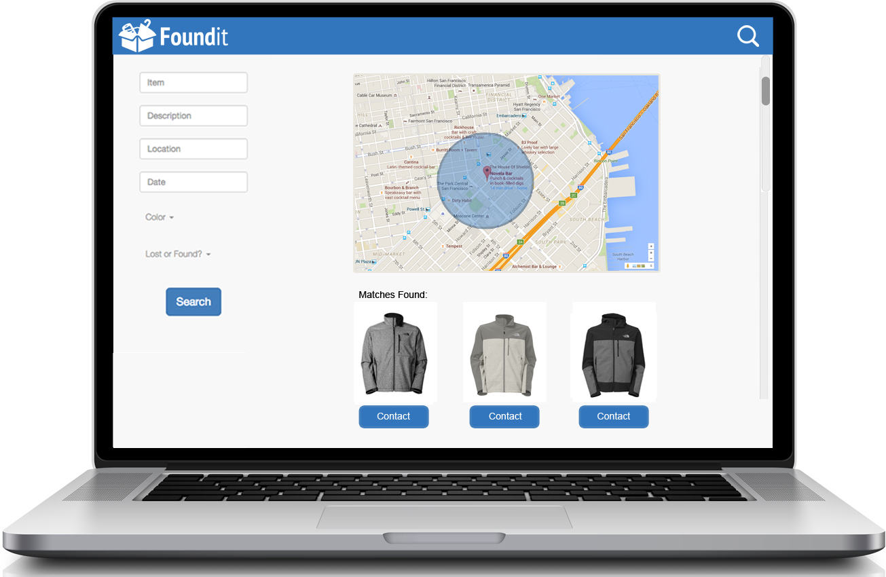
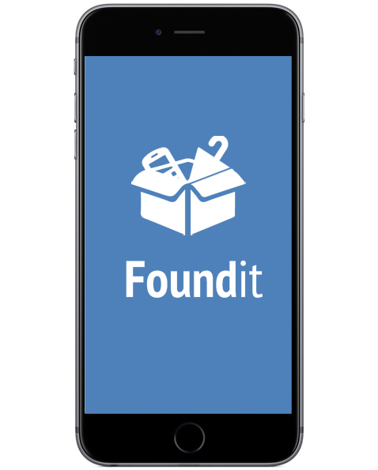

Foundit is a lost and found website created at the DBC Civic Hackathon. It allows the SF community to enter in lost and found items so that people can search through using location, as well as, a strong description algorithm. We built the site using Rails, Ruby and Javascript.

